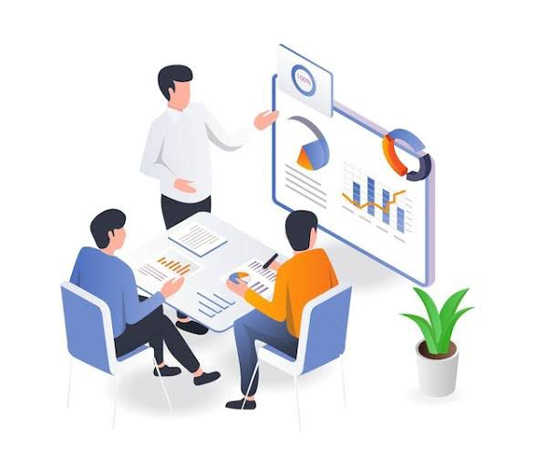

Para melhor apresentar sua empresa ao mercado e atender a necessidade de novos ou frequentes clientes, é
essencial que tenha um plano voltado a divulgação e estratégias. Construir uma identidade visual através de
mídias sociais, sites, anúncios e outras plataformas. Alimente seu público com novidades e feedbacks. Mostre
seu diferencial como: pinturas, tamanhos, formatos, linhas etc.

Dê suporte a sua venda
Tanto em atendimentos presenciais quanto em online, existem diversas situações que um catálogo ou amostra
auxilia uma venda, o envio dessas ferramentas com informações de cor, medidas, códigos, peso e muitas outras
especificações relacionadas ao seu produto, tira dúvidas técnicos e assim traz resultados positivos por
serem vendas certeiras.
Dicas
Identidade visual: Seja visto, invista na imagem de sua empresa como logo em sacolas, embalagem, brindes,
postagens virtuais etc. É importante ter o nome citado em eventos como feiras expositoras.
Qualidade: Preze uma relação de transparência com o seu cliente, ofereça preço, prazo ou qualidade, é
importante agir a partir do que ele procura, mesmo que haja pontos negativos nessa escolha, deixe ciência de
suas consequências.
Pós-venda: É importante estabelecer uma relação com seu cliente, saber se o produto fornecido atendeu as
necessidades procuradas por ele, isso ajuda na coleta de feedbacks, que se torna muito importante para a
evolução de sua empresa.